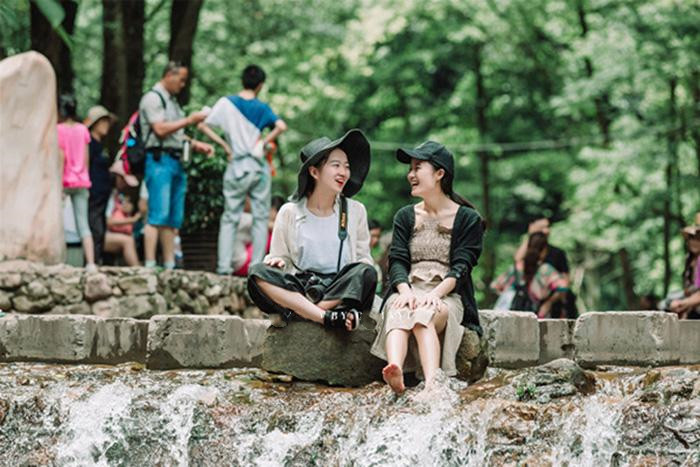
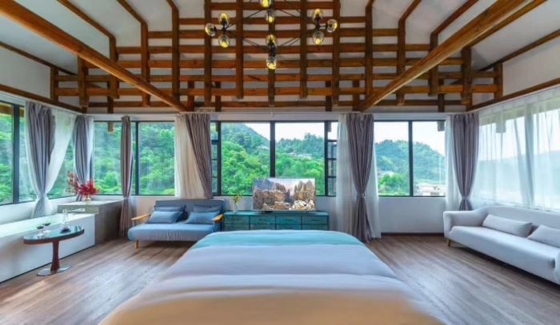
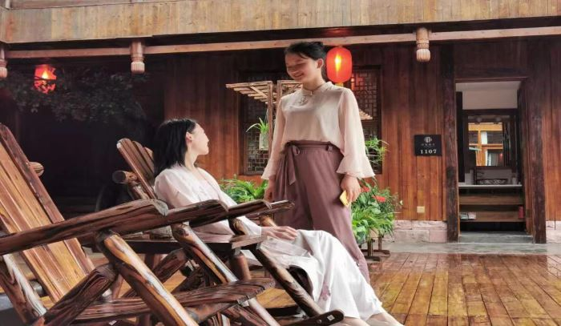
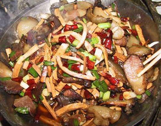

最近想去过张家界玩，具体路线怎么走？大概要花多少钱？有张家界那边合适的导游推荐一下吗？望分享
张家界旅游需要玩几天？大概费用多少？有哪些好玩的线路？
上海分享1378举报游览97133
-
[2019-05-23]
我刚去的张家界，因为时间比较充足，我们自己开车过去的，一共玩了5天时间，这次去也就把张家界一 些值得去的地方都去到了。我把之前找的一些攻略和这次去的一些经验做个总结，希望我的回答可以让你了解张家界，到张家界玩的开心。
（1）张家界高速：长张高速（东面）通往常德；二广高速、长沙；通安徽，沪昆高速等。张花高速通往；吉首（约2小时），凤凰古城（约3小时）贵州、四川等
（2）张家界机场：荷花国际机场（离市内5分钟路程）飞往城市有；上海，广州，北京，南京，杭州，徐州，大连等主要城市
（3）张家界火车站：张家界火车南站通往全国各地；高铁火车站2020年完工。
（4）张家界旅游东线景点：张家界天门山国家森林公园：玻璃桥，天门洞（离火车南站2分钟路程）；土家风情 园（游玩1小时）张家界国家森林公园在武陵源区（市内出发约40公里左右）对于自由行的朋友可以在火车站 边汽车站坐车20元每人武陵源景点有：宝峰湖（约游2-3小时）黄龙洞（游玩2小时）张家界 大峡谷玻璃桥（游玩2-4小时）晚上有魅力晚会表演，张家界西线旅游景点：贺龙故居，红二方面军出发地，苦竹寨，茅岩河漂流（游玩一天）。凤凰古城（游玩一天），芙蓉古镇（游玩2小时）等
我想自己完全自由行的，天门山门票站买票，刚开到天门山索道站停车场，今天怎么这么多人.我们排了大概1小 时队，最气愤的事发生了，一位工作人员走过来说今天的票卖完了，所有窗口停止售票。尤其景点太分散， 交通、安排路线很麻烦的，还有酒店预订，景点门票一大堆事情，有的景点还限流，不提前购买好票，去了还玩 不了。所以，后来还是决定走美女导游叫小君的推介线路，重要的是全程没有任何的购物，也没有隐形消 费，门票和酒店给我们优惠不少，非常热情，有问必答，专业的事交给专业的人做，相对于自己瞎逛要省心很多~我们是张家界小树林旅游小君定制的旅游路线：张家界森林公园、天子山、袁家界、百龙电梯、十里画廊、天门山、大峡谷玻璃桥、湘西、凤凰古城、芙蓉古镇（品质旅游：纯玩0购物、景区特色民宿，凤凰江边吊 脚楼观景房 ）第一天 ：张家界市内免费接站；送往民宿或酒店

第二天 ：上车前往景点：张家界大峡谷玻璃桥位于张家界大峡谷景区之内，桥面全部采用透明玻璃铺设，其长度和高度都是国内罕见。站在桥上，桥下400 米的谷底景色清晰可见，是对胆量的巨大挑战。玻璃桥中心还设有蹦极台，喜欢极限运动的话可以尝试一下。
第三天 ：前往景点：百龙天梯位于武陵源景区内，将金鞭溪、袁家界、天子山等主要景点连成了一体。袁家界景区位于杉刀沟北麓，是以石英岩为主构成的一座巨大而较平 缓的山岳。这里树木茂盛，有雾气弥漫、群峰叠嶂的美景。迷魂台、乾坤柱、天下第一桥、后花园。
前往天子山，位于张家界国家森林公园的北部，东临索溪峪景区，因其原始的自然风光而闻名。天子山有各种造型奇异的地质景观和 奇形山峰，如御笔峰、仙女献花、点将台等。前往景点：十里画廊是索溪峪景区内的景点，长达5公里的山谷两侧，处处是野花和林木采药老人、三姐妹峰、寿星迎宾、食指峰。第四天 ：乘车前往市区的天门山国家森林公园，挑战惊险玻璃栈道。天门山国家森林公园因自然奇观“天门洞”而得名，天门洞是巨大的穿山溶洞，经常雾气弥漫，走上到 达天门洞的台阶有种登上天庭的感觉。除此之外，还可以在缆车中俯瞰脚下99个弯的盘山公路和山中美景。胆大的还可以走一走贴壁悬空的玻璃栈道，体验凌空行走的刺激。
前往芙蓉镇原名“王村”，这里还是一座“挂在瀑布上的千年 古镇”，古镇中心地带建在一片高大的山石上，一条落差几十米的瀑布悬挂在古镇脚下，镇内的土家吊脚楼紧贴着瀑布而建，景观独特。
集合乘车前往中国美丽的古城（观赏夜景）青石板路、沱江边上的吊脚楼、古建筑和少数民族风情，都是这里的独特韵味。第五天 ：凤凰古城：沱江、沱江跳岩、虹桥风雨楼、万名塔、夺翠楼、北门城楼、石板老街游览完毕后，乘车从凤凰返回张家界。！
张家界住宿：1，张家界市区：民宿客栈，凤凰古城：江边吊脚楼

2，武陵源：景区里面的土家特色民宿（环境非常好，关键在景区不用来回进出景区省时省力）
参考费用：1、整个行程，总共5天4晚，总花费才1000多块钱，对于我来说是相当划算了！全程入住豪华酒店，吃的是小君给我安排的当地特色餐，门票、交通费、小君服务费全部都包含了！
2、1000多块玩一次张家界，对于其它网上的很多标价来说是不算贵，但是确更省心放心，小君做为当地导游，熟悉张家界每一寸土地，更重要的是，她真心把游客当朋友看待，希望更多的朋友来旅游，为朋友们留下好印象！
特别提醒！张家界旅游城市，所以提醒要游玩景点的话务必做好以下三点攻略：
1、带好身份证，需要订购门票，机票，保险请勿发错姓名和身份证号，有些景区无法更改。
2、老人和小孩优惠门票，景区是直接窗口购买才能享受优惠门票。
3、张家界景区都是实名制购票。
希望能帮到你，如果你也想提前规划行程，我贴出张家界小君的微信名片:17877766690给大家，你们去张家界，一定要找他。 -
[2019-05-23]
走完张家界小树林旅游的行程后，回来大致归纳了一下她们安排的行程有以下特色 1、全程无购物，属于纯玩，此行程有些景点常规旅游大团不去，因此游人更稀少，玩的随心所欲，无拘无束； 2、行程含世界自然遗产---袁家界景区；有峰林之王称号---天子山景区；世界上最美丽的峡谷之一---金鞭溪；三步一小景，五步一大景---十里画廊；年度最刺激---大峡谷景区；鬼斧神工---天门山、天门洞、空中寺庙；历史悠久历经沧桑---凤凰古城； 3、精华景点全都包含； 4、含每晚的酒店两人入住一间标准双人间，如出现单房差需补交房费； 5、要排长队的景区，导游都是带我们走的本地人通道，省去了排长队的时间！（这点很重要）
-
[2019-05-25]
我这次去张家界也是找的张家界小树林旅游，她们公司的人很和善，而且很有耐心，我提出的各类问题都是一一解答，行程路线安排的很合理，让我们省事、省心，最主要的是省钱，他们公司不愧是做高端旅游的公司，这次玩的很开心，接我的导游就是小君，现在还留着她电话，以后亲戚过去用，如果大家要去张家界旅游，可以提前联系她们订好行程，她们安排人来接你，帮你规划张家界出行线路
-
[2019-05-25]
之前一直想去张家界，一直想看看有名的乾坤柱，阿凡达取景的地方，有幸从网上找到了张家界小树林旅游的小君，我和老婆玩的很开心，整个行程安排得挺好的，所以没有太累，我们是自驾车到的张家界，小君亲自接待了我们，一路上忙前忙后的，真是辛苦了，再次感谢她的关心和照顾！
-
[2019-05-26]
3月中旬小学同学聚会要去张家界旅游，玩三天。感谢小树林旅游的小君很热情的跟我们讲解着景点线路和旅游注意事项，购门票和定住宿也是他们帮忙给我们联系好了的，没有收取任何费用，还这样尽心尽力。上次匆忙散了，今天看帖子也支持一下！感谢楼主！需要了解的可以直接加小君，微信号是：17877766690
更多问题（1）
[2019-05-23]
你们吃的怎么样？
[2019-05-23]
用餐比我想象中要好很多，非常的满意，安排的有张家界特色菜三下锅、地地道道的土家回锅肉、杀猪菜，苗族血粑鸭等都很有特色，出发前都给我们提供了菜单，小君做事真的很细心。

[2019-05-23]
有没有强制购物啊？
[2019-05-23]
我之前说过了，她们就是为了口碑去做品质的，所有没有任何购物，更重要的是他们中途真的是没有一分钱的隐性消费，这一点和其他的地方真的完全不一样。
[2019-05-23]
你这样说我就放心了，谢谢你的推荐。